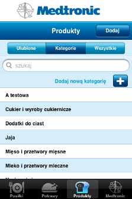

W aplikacji możliwe jest dodawanie kategorii i podkategorii produktów oraz dodawanie kategorii potraw. U góry każdej listy kategorii/podkategorii, do której można dodać nową znajduje się przycisk "Dodaj nową kategorię".
Aby dodać kategorię produktu należy wejść w zakładkę Potrawy i wejść w listę kategorii produktów. Po kliknięciu "Dodaj nową kategorię" pojawi się formularz dodawania.
Po wpisaniu nazwy kategorii i kliknięciu "Gotowe" zostanie ona dodana do listy.

Analogicznie postępujemy w przypadku dodawania kategorii potrawy. Wchodzimy w zakładkę Potrawy, następnie w listę kategorii i klikamy przycisk "Dodaj nową kategorię".